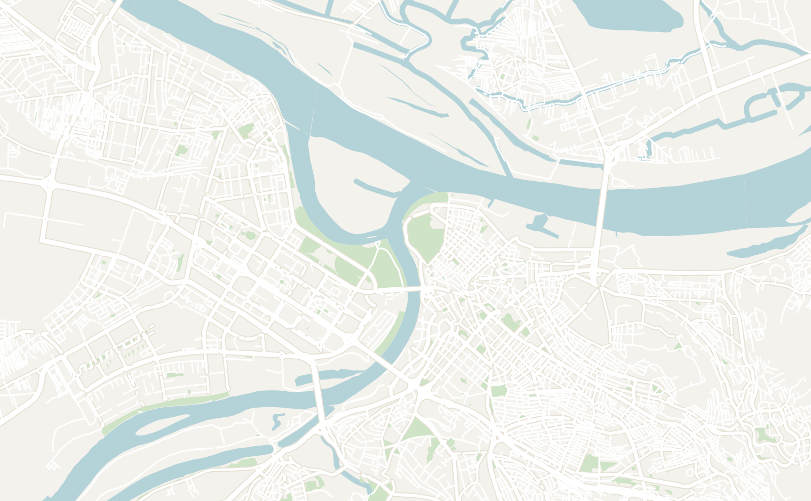
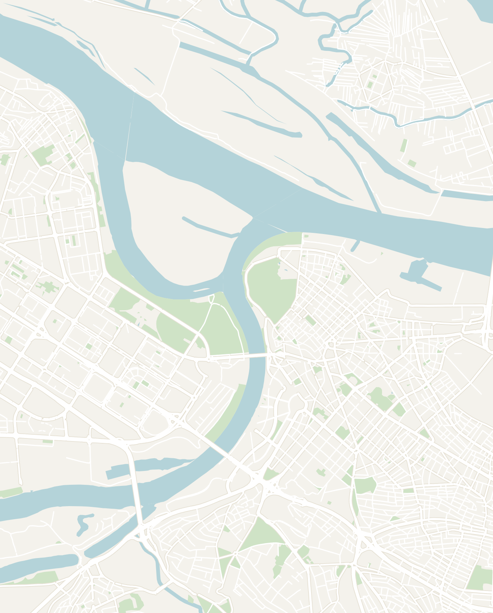

General
- I only spent an 8-hour layover in Belgrade so most of these tips were from a Serbian friend who lives in Belgrade
- I found Serbians to be really warm and down to earth. Every taxi driver and waiter was very welcoming and fun to talk to
- The level of English is very high and I had no trouble getting around at all. The Serbian language has two alphabets. Cyrillic is used for more formal situations and Latin is increasingly common. Both are used on signs everywhere so it is easy to navigate
- I was initially a bit hesitant due to the ongoing student protests at the time, but it felt very safe and I had no issues with the politics. Don't talk about Kosovo since it remains a contentious issue. You can only enter Serbia from Kosovo, but not the other way around
Serbia Overview
Belgrade
- Recommended time: 2-3 days
General
- This is the capital of Serbia and one of the largest cities in the Balkans with over 1.2 million people. Belgrade is super clean & modern and has very organized public transport
- Belgrade in particular is considered one of the best party cities in Europe and the nightlife is supposedly world-class. Plan to go on a weekend if you can
- Car:Go and YandexGo are the local ridesharing apps since Uber doesn't operate in Serbia
What to Do
- Church of Saint Sava — this is the iconic Serbian Orthodox church in the city center. It is an enormous white church with towering green domes. The inside is completely covered in gold mosaics and the dome alone cost $10M. It was probably one of the most impressive churches that I have seen
- Kneza Mihaila / Skadarlija walking streets — these are beautiful pedestrian streets in the city center. Kneza Mihaila is very modern, polished and lined with different shops and restaurants. Skadarija is more historic and also has a lot of restaurants and shops
- Republic Square - the center of the city connected to the National Museum of Serbia and Kneza Mihaila walking street
- Belgrade Fortress (Kalemegdan) — a fortress in a park overlooking the intersection of two rivers (Danube and the Sava). The moat is lined with old tanks, cannons and missile launchers. The "Despot's Gate" entrance with two massive towers is worth visiting
- Museum of Yugoslavia - Belgrade was the capital of Yugoslavia and this museum is where the former leader of Yugoslavia, Josip Broz Tito is buried. The history of Yugoslavia is very recent, interesting and definitely worth a visit
- Nikola Tesla Museum - a museum dedicated to the famous scientist who was ethnically Serbian
- Avala - located 30 minutes outside the city, this is the famous TV tower which provides a view overlooking Belgrade. There are also a number of monuments and hiking in this area
- Ada Ciganlija - a popular spot in the summertime for local Serbians to go to the beach, sunbathe and swim
- Gardoš Tower - a historic tower overlooking the river, located across the river from central Belgrade
- Kosančićev Venac — a charming historic street with a nice view overlooking the river
- 25. Maj - the river front promenade which is popular for locals to walk along
What to eat
- Restaurants
- Restoran Vuk - a traditional Serbian restaurant located in the city center
- Restoran Šaran Zemun - a fancy Serbian restaurant located right by the waterfront
- Zora Sweets & Desserts - a pastry shop recommended by a local
- Hotel Moskva - a historic 5 star hotel in Belgrade that is famous for their Moskva Šnit, a layered, almond sponge cake filled with a cream and cherries
- Bars
- Druid bar - cocktail bar in the city center
- Riddle Bar - cocktail bar in the city center
- Serbian Foods to Try
- Burek - flaky Balkan pastry filled with meat, cheese, potatoes or spinach. You can find this at almost any bakery
- Cevapi - little spiced meat sausages found all over the Balkans, served typically with fries
- Sarma - cabbage leaves stuffed with rice and minced meats
- Moskva Šnit from Hotel Moskva - a sweet layered sponge cake
Where to Stay
- Balkan Soul Hostel - considered the best hostel in Belgrade
- Yugodom - an old retro hotel with a Yugoslav theme if you want to experience a hotel room from the Yugoslav times

ATTRACTIONS
1Kneza Mihaila
2Republic Square
3Belgrade Fortress (Kalemegdan)
4Museum of Yugoslavia
5Nikola Tesla Museum
6Gardoš Tower
7Kosančićev Venac
825. Maj
RESTAURANTS & BARS
9Restoran Šaran Zemun
10Restoran Vuk
11Hotel Moskva
12Riddle Bar
13Zora Sweets & Desserts
ACCOMMODATION
14Balkan Soul Hostel
15Yugodom

Serbia
Belgrade
Touch to explore
Double-tap to open in Google Maps
Double-tap to open in Google Maps
Other Places to Go in Serbia
- Novi Sad - the second largest city in Serbia, only 1.5 hours from Belgrade
- Sombor - a beautiful, historic city in the north of Serbia close to the Hungarian and Croatian Border (Nikola Jokić is from here)
- Krupajsko vrelo - a beautiful waterfall with very clear water in Central Serbia
- Manasija Monastery - considered one of the prettiest monasteries in the country, located in Central Serbia
- Kopaonik - considered the best place to ski in Serbia and great for hiking in the summertime. Located far South along the border with Kosovo